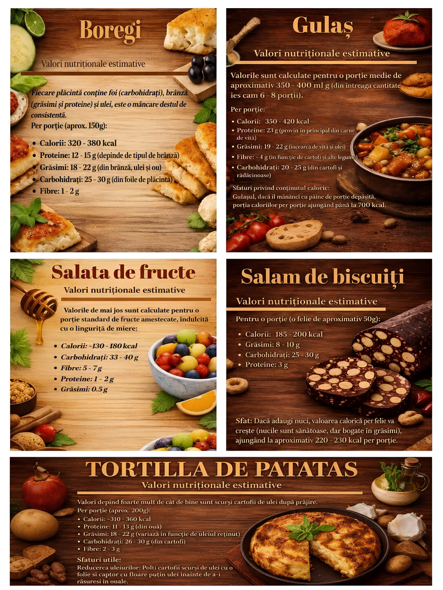
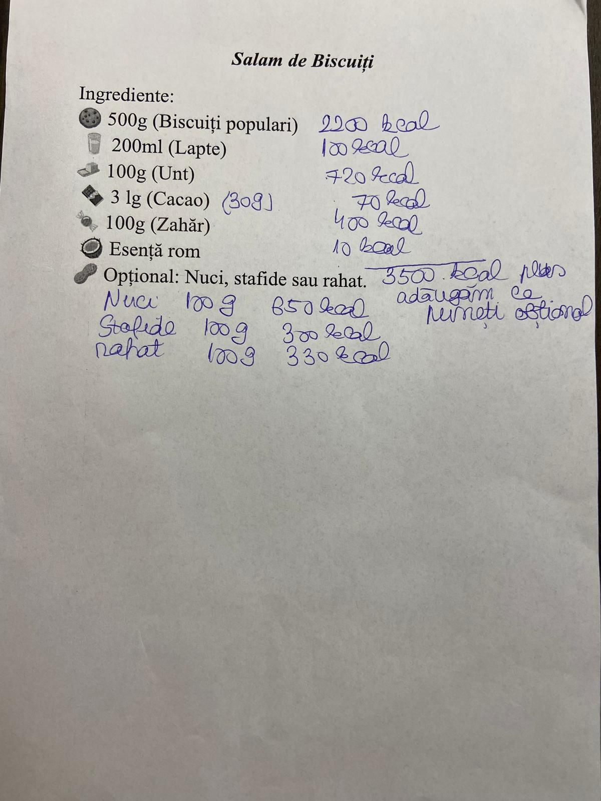
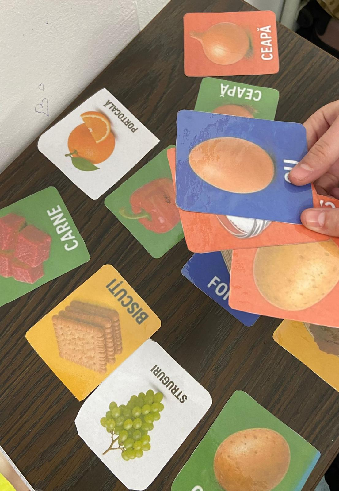
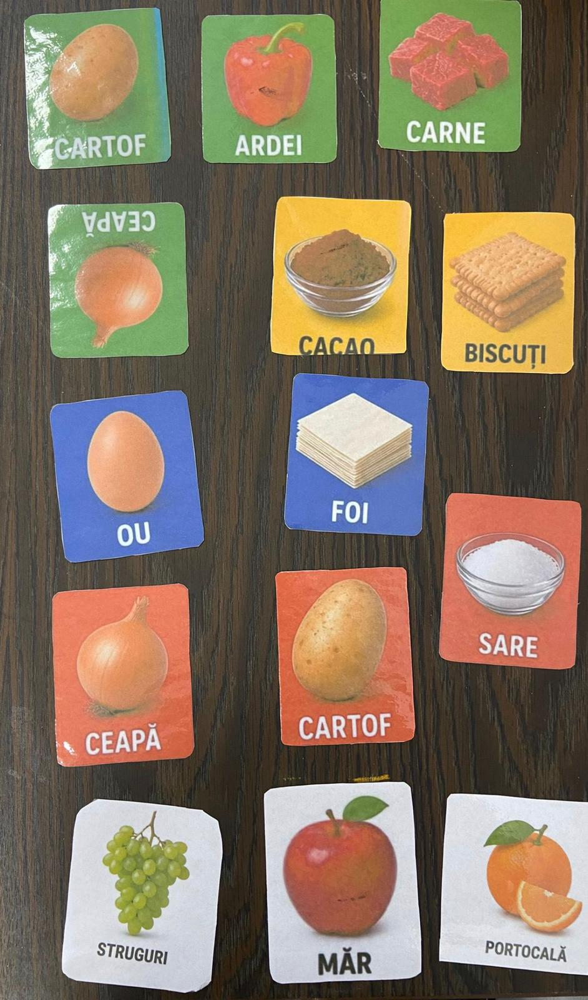
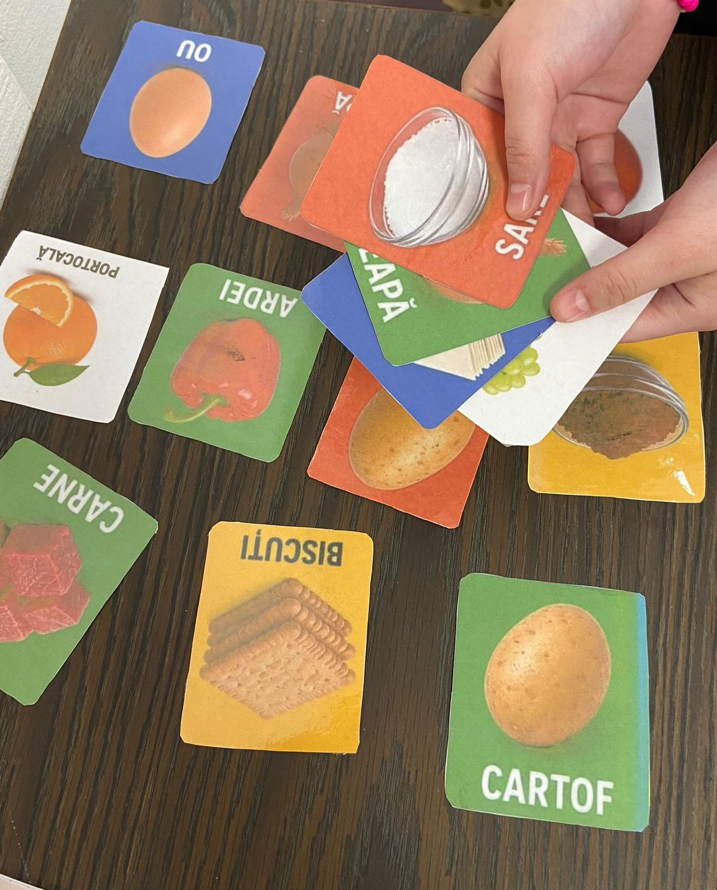

Curriculumul nutrițional integrat din cadrul platformei „Connect LMP – Cultură. Știință. Incluziune.” transformă rețetele tradiționale într-un instrument educațional interdisciplinar, accesibil și aplicat. Prin intermediul valorilor nutriționale, elevii analizează calorii, carbohidrați, fibre, proteine și grăsimi, dezvoltând competențe matematice și științifice prin interpretarea și compararea datelor. Cartonașele ABA și pictogramele ARASAAC facilitează învățarea vizuală și sprijină incluziunea copiilor cu cerințe educaționale speciale, stimulând comunicarea, autonomia și înțelegerea etapelor de lucru. Strategia didactică integrată valorifică activități de cooperare, muncă independentă, stimulare senzorială, gestionarea emoțiilor, jocuri de rol și aplicarea competențelor dobândite în mobilitățile Erasmus+. Astfel, platforma Connect LMP demonstrează că alimentația sănătoasă, cultura europeană și educația incluzivă pot fi reunite într-o experiență de învățare modernă, practică și relevantă pentru toți elevii.
Am creat un set de cartonașe ABA și pictograme ARASAAC pentru a sprijini învățarea vizuală și pentru a facilita accesul la informație al copiilor cu cerințe educaționale speciale. Aceste materiale îi ajută să recunoască ingredientele, să comunice mai ușor și să participe activ la procesul de învățare.
Pentru fiecare rețetă au fost calculate valorile nutriționale, incluzând caloriile, carbohidrații, fibrele, proteinele și grăsimile. Aceste informații transformă preparatele tradiționale într-un instrument educațional util pentru promovarea unei alimentații sănătoase și pentru dezvoltarea competențelor matematice și științifice.